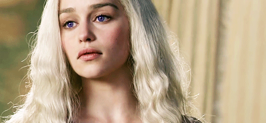

House Targaryen
House Targaryen
House Targaryen
House Targaryen

"Los sueños no nos hicieron reyes. Los dragones lo hicieron."
Daemon Targaryen.

|
 |
¿Quienes Son? |
Rasgos Targaryen |
|
La Casa Targaryen es una casa noble de ascendencia Valyria que reinó durante casi trescientos años los Siete Reinos de Poniente. Sus asentamientos eran la capital del reino Desembarco del Rey, la isla de Rocadragón y el castillo de Refugio Estival. Su emblema es un dragón de tres cabezas de gules en campo sable, representando a Aegon I y sus hermanas Rhaenys y Visenya. Su lema es Fuego y Sangre y sus espadas ancestrales de acero valyrio, ambas en actual paradero desconocido, son Fuegoscuro y Hermana Oscura. |
Los Targaryen son descendientes de una de las familias nobles del Feudo Franco de Valyria que escaparon de la Maldición de Valyria y se establecieron en la isla de Rocadragón. De Valyria mantienen una extraña belleza; la expresión "Sangre del Dragón" se refiere a un conjunto de típicos rasgos de la antigua Valyria: pelo de color rubio platino o plateado y ojos violetas, lilas o índigo. |